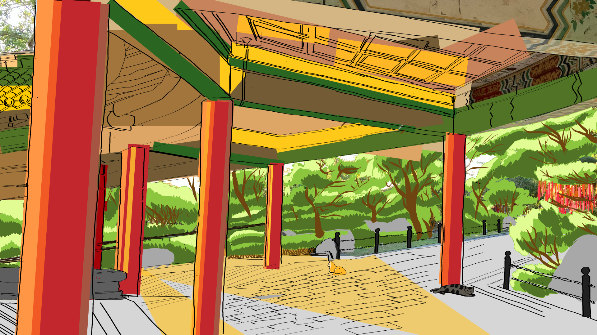
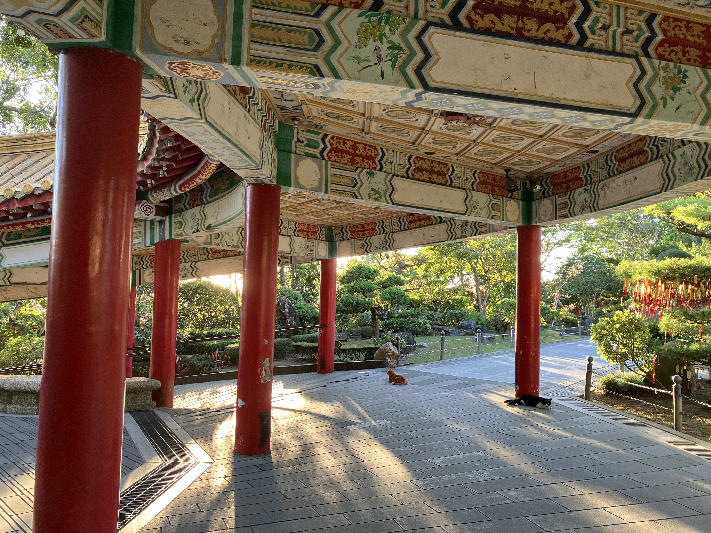

I decided to choose a photo I took of a traditional temple while studying abroad in Taiwan. This photo, aside from its aesthetic beauty, holds sentimental value to me as it reminds me of all the memories I had exploring the temple and encountering stray cats. I decided to transform it by capturing the warm and sunny mood that permeated the afternoon. I added more yellow for the roof and highlights on the red pillars to tie it together. I also simplified the shapes and patterns for the ceiling and the cats to give a more abstract feeling to some of the details. I imagine that the sunlight and the sharp shape of the pillars is what will draw the eye across the warm, welcoming atmosphere.